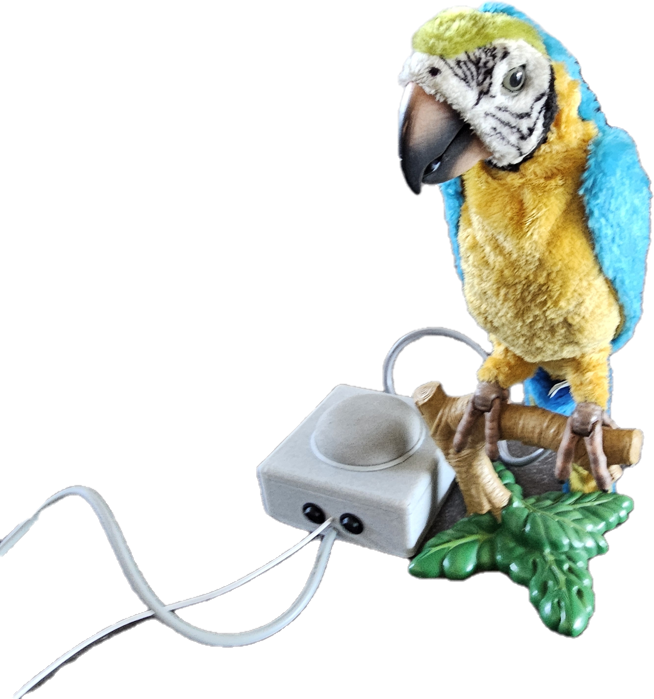

Hardware projecten
Omni Direction Car
Mijn eerste grote project dat ik volledig zelf ontworpen en uitgewerkt heb: een omnidirectionele auto met mecanumwielen die vooruit, achteruit, zijwaarts en schuin rijdt en op zijn plaats kan ronddraaien. Van het metalen frame en de plastic buitenkant tot de elektronica en de software, alles is zelf gemaakt. De auto is zelfs sterk genoeg om er zelf op te rijden.

Orrery
Ik heb een orrery gemaakt, een mechanisch model van het zonnestelsel dat wordt aangestuurd door een ESP32. Je geeft een datum in en de orrery draait de planeten naar de juiste posities voor die dag. Via een controlepaneel met lcd, zoemer en draaiknop kies je tussen de menuopties.

Google Home Papegaai
Ik heb een speelgoedpapegaai gemengd met een Google Home. Het idee is dat wanneer je iets aan Google vraagt, de papegaai antwoordt. De bek gaat open en dicht op de stem van Google en hij flappert met zijn vleugels. De onderdelen zijn een Arduino Nano, Google Home, papegaai en voeding, en een behuizing voor alle elektronica.
Robotarm
Dit project is een robotarm, bedoeld als schaakrobot met een camera boven het bord. De arm is gebaseerd op een bestaand 3D-model, met een zelf ontworpen basis waarin alle elektronica zit. Dit project is nog een work in progress.